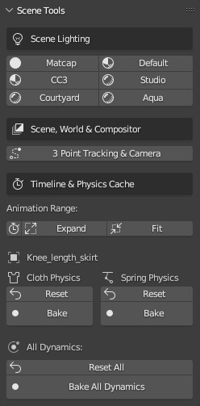

Scene Tools
Scene Tools are a simple set of tools which allow the rapid manipulation of some scene conditions.
Scene Lighitng provides a simple means of quickly applying a variety of lighting and HDRI presets. Including a close approximation of the lighting used in Character Creator for reference purposes.
3 Point Tracking and Camera instantiates a camera and a transform point which the camera will track.
Animation Range from Character sets the animation frame range to that of the current action on the character’s armature.
Sync Physics Range sets the physics bake range to the current world scene frame range.